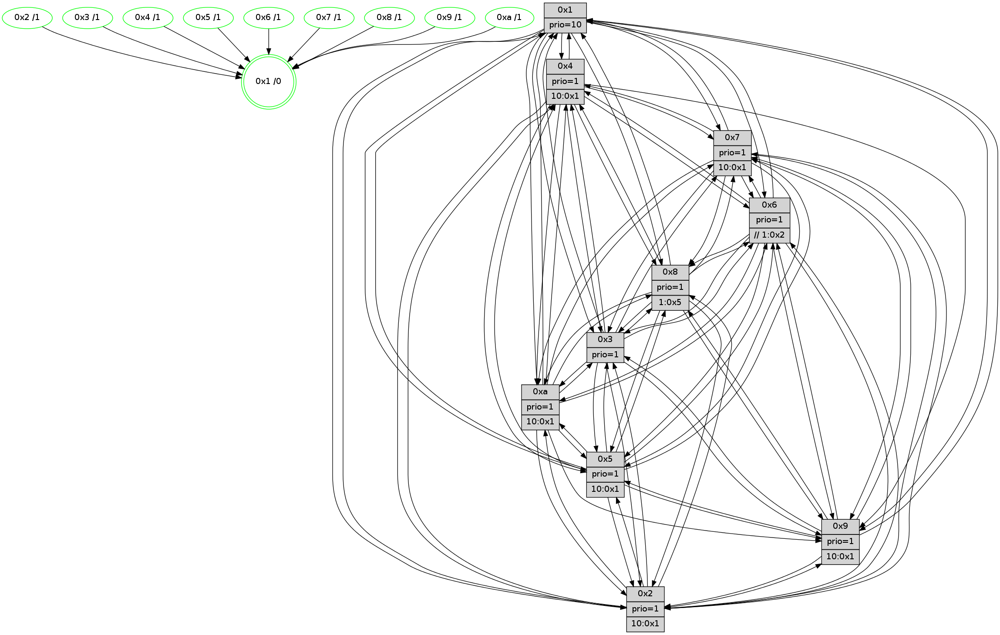

>> << IDX [start] -100 -25 -5 +0 +5 +25 [1600.33445907]
 Previous packets
----------------------------------------------------------------------
1595.605672 beacon01(faad) #0 coord=01,02,03,04,05,06,07,0a,09,08 cycle=688.0ms assoc
-- color-indic=1 64 d2 77
1595.615653 beacon02(faad) #0 coord=01,02,03,04,05,06,07,0a,09,08 cycle=688.0ms assoc 64 41 46
1595.625654 beacon03(faad) #0 coord=01,02,03,04,05,06,07,0a,09,08 cycle=688.0ms assoc 64 3b 0b
1595.635655 beacon04(faad) #0 coord=01,02,03,04,05,06,07,0a,09,08 cycle=688.0ms assoc 64 4c e1
1595.645655 beacon05(faad) #0 coord=01,02,03,04,05,06,07,0a,09,08 cycle=688.0ms assoc 64 36 ac
1595.655657 beacon06(faad) #0 coord=01,02,03,04,05,06,07,0a,09,08 cycle=688.0ms assoc 64 b8 7b
1595.665655 beacon07(faad) #0 coord=01,02,03,04,05,06,07,0a,09,08 cycle=688.0ms assoc 64 c2 36
1595.675661 beacon0a(faad) #0 coord=01,02,03,04,05,06,07,0a,09,08 cycle=688.0ms assoc 64 b3 3d
1595.695660 beacon08(faad) #0 coord=01,02,03,04,05,06,07,0a,09,08 cycle=688.0ms assoc 64 47 a7
1595.708469 [Hello(5): seq=1017 sym=7,6,4,2,1,9,8,10,3 sysInfo=hasWarning stat=7:4,5,5,2/6:3,9,4,3/4:3,7,8,1/2:1,0,6,2/1:4,11,0,0/9:12,3,2,15/8:10,6,12,10/10:3,1,6,13/3:3,12,7,0]
1595.711202 [Hello(6): seq=1017 sym=3,2,5,4,7,9,8,10,1 sysInfo=hasWarning stat=3:2,4,1,1/2:14,1,8,3/5:6,12,4,8/4:7,9,14,12/7:15,9,1,2/9:13,11,2,14/8:1,8,8,12/10:4,12,12,1/1:11,3,6,1]
1595.713876 [Hello(2): seq=1013 sym=4,5,7,6,3,9,8,10,1 sysInfo=hasWarning stat=4:13,15,14,1/5:10,14,0,5/7:3,8,6,4/6:10,0,2,0/3:15,5,6,0/9:8,11,10,13/8:9,12,11,1/10:6,14,11,15/1:15,15,1,0]
1595.716790 [Hello(1): seq=926 sym=4,2,9,5,10,3,8,6,7 sysInfo=coloring-mode-on,ColoringModeRequestCalled stat=4:14,11,14,5/2:3,10,11,9/9:7,0,11,6/5:11,0,1,13/10:0,8,3,10/3:14,6,5,14/8:14,5,10,9/6:10,2,13,7/7:13,12,2,4]
1595.720054 [Color(6) seq=649 @0:0 prio=1 >>1.@2,1.@3,1.@4]
1595.723233 [Color(2) seq=577 @0:0 prio=1 >10.@1,1.@3,1.@4,1.@5]
1595.724897 [Color(8) seq=604 @0:0 prio=1 >1.@5,1.@6,1.@7,1.@9]
1595.727146 [Hello(3): seq=1017 sym=1,7,6,2,4,8,9,10,5 sysInfo=hasWarning stat=1:13,2,11,0/7:15,4,7,1/6:3,8,2,0/2:1,15,3,0/4:10,2,6,1/8:7,13,13,10/9:6,4,14,4/10:14,12,5,8/5:0,14,10,4]
1595.730928 [Color(3) seq=646 @0:0 prio=1]
----------------------------------------------------------------------
1596.393803 beacon01(faad) #0 coord=01,02,03,04,05,06,07,0a,09,08 cycle=688.0ms assoc
-- color-indic=1 64 6e 72
1596.403786 beacon02(faad) #0 coord=01,02,03,04,05,06,07,0a,09,08 cycle=688.0ms assoc 64 fd 43
1596.413785 beacon03(faad) #0 coord=01,02,03,04,05,06,07,0a,09,08 cycle=688.0ms assoc 64 87 0e
1596.423787 beacon04(faad) #0 coord=01,02,03,04,05,06,07,0a,09,08 cycle=688.0ms assoc 64 f0 e4
1596.433787 beacon05(faad) #0 coord=01,02,03,04,05,06,07,0a,09,08 cycle=688.0ms assoc 64 8a a9
1596.443786 beacon06(faad) #0 coord=01,02,03,04,05,06,07,0a,09,08 cycle=688.0ms assoc 64 04 7e
1596.453788 beacon07(faad) #0 coord=01,02,03,04,05,06,07,0a,09,08 cycle=688.0ms assoc 64 7e 33
1596.463790 beacon0a(faad) #0 coord=01,02,03,04,05,06,07,0a,09,08 cycle=688.0ms assoc 64 0f 38
1596.483793 beacon08(faad) #0 coord=01,02,03,04,05,06,07,0a,09,08 cycle=688.0ms assoc 64 fb a2
1596.495664 [Hello(8): seq=961 sym=5,2,3,7,9,6,4,10,1 sysInfo=hasWarning stat=5:6,14,10,4/2:13,9,4,0/3:12,3,8,6/7:10,3,6,1/9:6,13,12,9/6:8,2,6,4/4:14,3,1,3/10:0,13,2,7/1:11,15,8,0]
1596.498393 [Color(5) seq=542 @0:0 prio=1 >10.@1,1.@6,1.@7,1.@8]
1596.500128 [Hello(4): seq=1017 sym=5,8,6,2,3,9,7,10,1 sysInfo=hasWarning stat=5:11,2,0,6/8:4,9,6,1/6:1,1,12,6/2:3,4,3,5/3:7,6,11,2/9:10,0,2,6/7:2,11,7,2/10:11,8,11,1/1:11,4,4,1]
1596.502992 [Color(1) seq=697 @0:0 prio=10]
1596.504561 [Color(4) seq=534 @0:0 prio=1 >10.@1,1.@2,1.@3,1.@5]
1596.506270 [Hello(10): seq=950 sym=6,2,3,8,7,5,9,4,1 sysInfo=hasWarning stat=6:12,15,1,9/2:5,4,5,4/3:11,8,12,0/8:8,6,7,8/7:3,5,2,1/5:10,15,8,5/9:1,4,1,0/4:6,6,12,5/1:7,0,5,1]
1596.509749 [Color(10) seq=594 @0:0 prio=1 >10.@1,1.@5,1.@6,1.@7]
1596.513565 [Hello(7): seq=1017 sym=2,3,5,6,8,4,9,10,1 sysInfo=hasWarning stat=2:10,14,1,8/3:12,4,6,7/5:13,13,15,7/6:6,5,0,1/8:2,13,8,3/4:15,3,5,2/9:5,1,9,5/10:5,9,1,1/1:10,9,2,0]
1596.517226 [Hello(9): seq=961 sym=2,5,3,4,7,6,8,10,1 sysInfo=hasWarning stat=2:4,0,5,15/5:7,11,9,2/3:3,3,3,8/4:3,4,9,5/7:7,7,2,2/6:1,15,1,5/8:9,12,11,11/10:15,5,13,1/1:3,6,6,1]
1596.520679 [Color(9) seq=543 @0:0 prio=1 >10.@1,1.@5,1.@6,1.@7]
1596.529467 [Color(7) seq=524 @0:0 prio=1]
----------------------------------------------------------------------
1597.181936 beacon01(faad) #0 coord=01,02,03,04,05,06,07,0a,09,08 cycle=688.0ms assoc
-- color-indic=1 64 5a 6a
1597.191918 beacon02(faad) #0 coord=01,02,03,04,05,06,07,0a,09,08 cycle=688.0ms assoc 64 c9 5b
1597.201918 beacon03(faad) #0 coord=01,02,03,04,05,06,07,0a,09,08 cycle=688.0ms assoc 64 b3 16
1597.211918 beacon04(faad) #0 coord=01,02,03,04,05,06,07,0a,09,08 cycle=688.0ms assoc 64 c4 fc
1597.221918 beacon05(faad) #0 coord=01,02,03,04,05,06,07,0a,09,08 cycle=688.0ms assoc 64 be b1
1597.231918 beacon06(faad) #0 coord=01,02,03,04,05,06,07,0a,09,08 cycle=688.0ms assoc 64 30 66
1597.241920 beacon07(faad) #0 coord=01,02,03,04,05,06,07,0a,09,08 cycle=688.0ms assoc 64 4a 2b
1597.251924 beacon0a(faad) #0 coord=01,02,03,04,05,06,07,0a,09,08 cycle=688.0ms assoc 64 3b 20
1597.271924 beacon08(faad) #0 coord=01,02,03,04,05,06,07,0a,09,08 cycle=688.0ms assoc 64 cf ba
1597.283153 [Hello(1): seq=927 sym=4,2,9,5,10,3,8,6,7 sysInfo=coloring-mode-on,ColoringModeRequestCalled stat=4:14,12,14,5/2:3,11,11,9/9:8,1,11,6/5:11,0,1,13/10:1,9,3,10/3:15,7,5,14/8:15,6,10,9/6:10,3,13,7/7:14,13,2,4]
1597.286324 [Color(8) seq=605 @0:0 prio=1 >1.@5,1.@6,1.@7,1.@9]
1597.288706 [Hello(5): seq=1018 sym=7,6,4,2,1,9,8,10,3 sysInfo=hasWarning stat=7:5,6,5,2/6:4,10,4,3/4:4,8,8,1/2:2,1,6,2/1:5,12,0,0/9:13,4,2,15/8:11,7,12,10/10:4,2,6,13/3:4,13,7,0]
1597.291855 [STC(1) #0.290 new-neigh,tree-change,inconsistent-stability,stable,to-color d=0]
1597.293450 [Hello(6): seq=1018 sym=3,2,5,4,7,9,8,10,1 sysInfo=hasWarning stat=3:3,5,1,1/2:14,2,8,3/5:7,13,4,8/4:8,10,14,12/7:0,10,1,2/9:14,12,2,14/8:2,9,8,12/10:5,13,12,1/1:11,4,6,1]
1597.296279 [Color(6) seq=650 @0:0 prio=1 >>1.@2,1.@3,1.@4]
1597.300108 [Hello(3): seq=1018 sym=1,7,6,2,4,8,9,10,5 sysInfo=hasWarning stat=1:13,3,11,0/7:0,5,7,1/6:3,8,2,0/2:1,15,3,0/4:11,3,6,1/8:8,13,13,10/9:7,5,14,4/10:15,13,5,8/5:1,15,10,4]
1597.304843 [Color(3) seq=647 @0:0 prio=1]
1597.311383 [Hello(2): seq=1014 sym=4,5,7,6,3,9,8,10,1 sysInfo=hasWarning stat=4:14,0,14,1/5:11,15,0,5/7:4,9,6,4/6:10,0,2,0/3:0,6,6,0/9:9,12,10,13/8:10,13,11,1/10:7,15,11,15/1:15,0,1,0]
1597.316435 [Color(2) seq=578 @0:0 prio=1 >10.@1,1.@3,1.@4,1.@5]
----------------------------------------------------------------------
1597.970065 beacon01(faad) #0 coord=01,02,03,04,05,06,07,0a,09,08 cycle=688.0ms assoc
-- color-indic=1 64 e6 6f
1597.980047 beacon02(faad) #0 coord=01,02,03,04,05,06,07,0a,09,08 cycle=688.0ms assoc 64 75 5e
1597.990048 beacon03(faad) #0 coord=01,02,03,04,05,06,07,0a,09,08 cycle=688.0ms assoc 64 0f 13
1598.000048 beacon04(faad) #0 coord=01,02,03,04,05,06,07,0a,09,08 cycle=688.0ms assoc 64 78 f9
1598.010048 beacon05(faad) #0 coord=01,02,03,04,05,06,07,0a,09,08 cycle=688.0ms assoc 64 02 b4
1598.020049 beacon06(faad) #0 coord=01,02,03,04,05,06,07,0a,09,08 cycle=688.0ms assoc 64 8c 63
1598.030048 beacon07(faad) #0 coord=01,02,03,04,05,06,07,0a,09,08 cycle=688.0ms assoc 64 f6 2e
1598.040053 beacon0a(faad) #0 coord=01,02,03,04,05,06,07,0a,09,08 cycle=688.0ms assoc 64 87 25
1598.050052 beacon09(faad) #0 coord=01,02,03,04,05,06,07,0a,09,08 cycle=688.0ms assoc 64 09 f2
1598.060053 beacon08(faad) #0 coord=01,02,03,04,05,06,07,0a,09,08 cycle=688.0ms assoc 64 73 bf
1598.073458 [Hello(8): seq=962 sym=5,2,3,7,9,6,4,10,1 sysInfo=hasWarning stat=5:7,15,10,4/2:14,10,4,0/3:13,4,8,6/7:11,4,6,1/9:7,14,12,9/6:9,3,6,4/4:15,4,1,3/10:1,14,2,7/1:12,0,9,0]
1598.078420 [Hello(10): seq=951 sym=6,2,3,8,7,5,9,4,1 sysInfo=hasWarning stat=6:13,0,1,9/2:6,5,5,4/3:12,9,12,0/8:9,7,7,8/7:4,6,2,1/5:11,15,8,5/9:2,5,1,0/4:6,6,12,5/1:8,0,6,1]
1598.081746 [STC(9)->1 #0.290 new-neigh,tree-change,inconsistent-stability,stable,to-color d=1]
1598.083955 [STC(10)->1 #0.290 new-neigh,tree-change,inconsistent-stability,stable,to-color d=1]
1598.086957 [STC(8)->1 #0.290 new-neigh,tree-change,inconsistent-stability,stable,to-color d=1]
1598.088688 [STC(7)->1 #0.290 new-neigh,tree-change,inconsistent-stability,stable,to-color d=1]
1598.091930 [Color(7) seq=525 @0:0 prio=1]
1598.093199 [Color(10) seq=595 @0:0 prio=1 >10.@1,1.@5,1.@6,1.@7]
1598.096242 [Hello(4): seq=1018 sym=5,8,6,2,3,9,7,10,1 sysInfo=hasWarning stat=5:12,2,0,6/8:5,10,6,1/6:2,2,12,6/2:4,5,3,5/3:8,7,11,2/9:11,1,2,6/7:3,12,7,2/10:12,9,11,1/1:12,4,5,1]
1598.099003 [Color(9) seq=544 @0:0 prio=1 >10.@1,1.@5,1.@6,1.@7]
1598.100977 [STC(4)->1 #0.290 new-neigh,tree-change,inconsistent-stability,stable,to-color d=1]
1598.103831 [Color(5) seq=543 @0:0 prio=1 >10.@1,1.@6,1.@7,1.@8]
1598.108513 [Color(4) seq=535 @0:0 prio=1 >10.@1,1.@2,1.@3,1.@5]
----------------------------------------------------------------------
1598.758196 beacon01(faad) #0 coord=01,02,03,04,05,06,07,0a,09,08 cycle=688.0ms assoc
-- color-indic=1 64 22 61
1598.768177 beacon02(faad) #0 coord=01,02,03,04,05,06,07,0a,09,08 cycle=688.0ms assoc 64 b1 50
1598.778178 beacon03(faad) #0 coord=01,02,03,04,05,06,07,0a,09,08 cycle=688.0ms assoc 64 cb 1d
1598.788178 beacon04(faad) #0 coord=01,02,03,04,05,06,07,0a,09,08 cycle=688.0ms assoc 64 bc f7
1598.798178 beacon05(faad) #0 coord=01,02,03,04,05,06,07,0a,09,08 cycle=688.0ms assoc 64 c6 ba
1598.808178 beacon06(faad) #0 coord=01,02,03,04,05,06,07,0a,09,08 cycle=688.0ms assoc 64 48 6d
1598.818179 beacon07(faad) #0 coord=01,02,03,04,05,06,07,0a,09,08 cycle=688.0ms assoc 64 32 20
1598.828185 beacon0a(faad) #0 coord=01,02,03,04,05,06,07,0a,09,08 cycle=688.0ms assoc 64 43 2b
1598.848184 beacon08(faad) #0 coord=01,02,03,04,05,06,07,0a,09,08 cycle=688.0ms assoc 64 b7 b1
1598.859134 [Hello(1): seq=928 sym=4,2,9,5,10,3,8,6,7 sysInfo=coloring-mode-on,ColoringModeRequestCalled stat=4:15,13,15,5/2:4,12,11,9/9:8,2,12,6/5:11,1,1,13/10:1,10,4,10/3:0,8,5,14/8:0,6,11,9/6:11,4,13,7/7:14,14,3,4]
1598.863298 [Hello(3): seq=1019 sym=1,7,6,2,4,8,9,10,5 sysInfo=hasWarning stat=1:14,4,11,0/7:0,6,8,1/6:3,8,2,0/2:2,0,3,0/4:12,4,7,1/8:9,14,14,10/9:7,6,15,4/10:15,14,5,8/5:1,0,10,4]
1598.867735 [Hello(2): seq=1015 sym=4,5,7,6,3,9,8,10,1 sysInfo=hasWarning stat=4:15,1,15,1/5:11,0,0,5/7:5,10,7,4/6:10,0,2,0/3:0,6,6,0/9:9,13,11,13/8:11,13,12,1/10:7,0,11,15/1:0,0,1,0]
1598.870548 [Hello(5): seq=1019 sym=7,6,4,2,1,9,8,10,3 sysInfo=hasWarning stat=7:5,6,5,2/6:5,11,4,3/4:4,9,8,1/2:3,2,6,2/1:5,12,1,0/9:13,4,2,15/8:12,7,12,10/10:4,2,6,13/3:5,14,7,0]
1598.873751 [Hello(6): seq=1019 sym=3,2,5,4,7,9,8,10,1 sysInfo=hasWarning stat=3:4,6,1,1/2:15,3,8,3/5:7,14,5,8/4:9,11,15,12/7:1,11,2,2/9:14,13,3,14/8:3,10,9,12/10:5,14,12,1/1:12,4,6,1]
1598.878166 [Color(6) seq=651 @0:0 prio=1 >>1.@2,1.@3,1.@4]
1598.880416 [Color(3) seq=648 @0:0 prio=1]
1598.882209 [Color(8) seq=606 @0:0 prio=1 >1.@5,1.@6,1.@7,1.@9]
1598.885028 [Color(2) seq=579 @0:0 prio=1 >10.@1,1.@3,1.@4,1.@5]
----------------------------------------------------------------------
1599.546326 beacon01(faad) #0 coord=01,02,03,04,05,06,07,0a,09,08 cycle=688.0ms assoc
-- color-indic=1 64 9e 64
1599.556308 beacon02(faad) #0 coord=01,02,03,04,05,06,07,0a,09,08 cycle=688.0ms assoc 64 0d 55
1599.566308 beacon03(faad) #0 coord=01,02,03,04,05,06,07,0a,09,08 cycle=688.0ms assoc 64 77 18
1599.576309 beacon04(faad) #0 coord=01,02,03,04,05,06,07,0a,09,08 cycle=688.0ms assoc 64 00 f2
1599.586308 beacon05(faad) #0 coord=01,02,03,04,05,06,07,0a,09,08 cycle=688.0ms assoc 64 7a bf
1599.596309 beacon06(faad) #0 coord=01,02,03,04,05,06,07,0a,09,08 cycle=688.0ms assoc 64 f4 68
1599.606309 beacon07(faad) #0 coord=01,02,03,04,05,06,07,0a,09,08 cycle=688.0ms assoc 64 8e 25
1599.616315 beacon0a(faad) #0 coord=01,02,03,04,05,06,07,0a,09,08 cycle=688.0ms assoc 64 ff 2e
1599.636314 beacon08(faad) #0 coord=01,02,03,04,05,06,07,0a,09,08 cycle=688.0ms assoc 64 0b b4
1599.648182 [Hello(8): seq=963 sym=5,2,3,7,9,6,4,10,1 sysInfo=hasWarning stat=5:7,0,10,4/2:14,11,4,0/3:13,4,8,6/7:11,5,7,1/9:7,15,12,9/6:9,3,6,4/4:0,5,2,3/10:1,15,2,7/1:13,0,9,0]
1599.650915 [Color(5) seq=544 @0:0 prio=1 >10.@1,1.@6,1.@7,1.@8]
1599.652809 [Hello(9): seq=963 sym=2,5,3,7,6,8,1 sysInfo=hasWarning stat=2:6,2,5,15/5:9,12,9,2/3:5,5,3,8/7:7,8,2,2/6:3,1,1,5/8:11,14,11,11/1:5,6,7,1]
1599.655461 PARSE ERROR************************
Traceback (most recent call last):
File "PacketAnalysis.py", line 167, in showOperaPacket
structPacket = OperaPacketParse.parsePacket(rawPacket)
File "../../pkg-python/HipSens/Core/OperaPacketParse.py", line 461, in parsePacket
return parseHelloMessage(data)
File "../../pkg-python/HipSens/Core/OperaPacketParse.py", line 125, in parseHelloMessage
struct.unpack("!H",linkList[:2])[0])
error: unpack requires a string argument of length 2
48 34 0a 00 03 b8 00 02 02 12 06 00 02 00 03 00 08 00 07 00 05 00 09 00 04 00 01 00 53 04 00 02 00 00 4c 12 91 1e 45 67 0c ad 87 8a 12 64 58 0c 01 62 5d 77 16 09 4d 4d
1599.660210 [Color(10) seq=596 @0:0 prio=1 >10.@1,1.@5,1.@6,1.@7]
1599.663913 [Hello(7): seq=1019 sym=2,3,5,6,8,4,9,10,1 sysInfo=hasWarning stat=2:12,0,1,8/3:14,6,6,7/5:15,14,15,7/6:8,7,0,1/8:4,15,8,3/4:0,4,6,2/9:5,2,9,5/10:5,10,1,1/1:12,9,3,0]
1599.668023 [Color(7) seq=526 @0:0 prio=1 >10.@1,1.@5,1.@6,1.@8]
1599.672218 [Color(9) seq=545 @0:0 prio=1 >10.@1,1.@5,1.@6,1.@7]
1599.675206 [Hello(4): seq=1019 sym=5,8,6,2,3,9,7,10,1 sysInfo=hasWarning stat=5:13,2,0,6/8:6,11,6,1/6:3,3,12,6/2:5,6,3,5/3:9,8,11,2/9:11,1,2,6/7:3,12,7,2/10:12,9,11,1/1:13,4,5,1]
1599.679965 [Color(4) seq=536 @0:0 prio=1 >10.@1,1.@2,1.@3,1.@5]